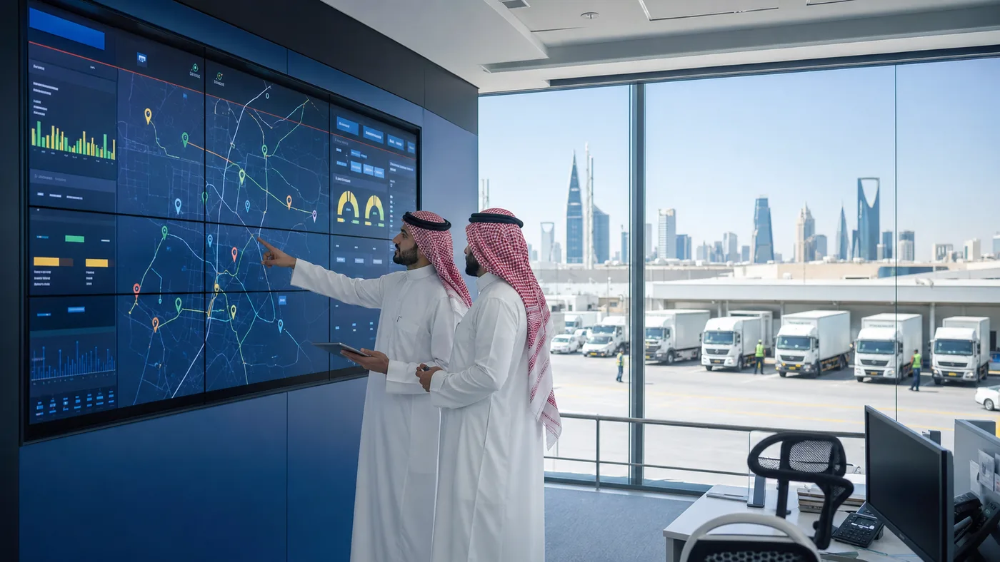

Non-oil GDP growth
Strategic cost systems show which products, services, and branches create sustainable value.
Riyadh office · On-site since 2017
Growxcel gives Saudi management teams the cost clarity, operating budgets, and decision systems needed to grow without losing control.

Vision 2030 alignment
Growxcel translates growth priorities into the systems management teams use every day.
Strategic cost systems show which products, services, and branches create sustainable value.
Operating budgets, clear owners, and decision-ready KPIs strengthen accountability.
Lower waste and better asset efficiency make growth more credible and fundable.
What changes
Instead of waiting for month-end explanations, leaders see what is happening and what requires action.
Sectors served
Where products, branches, routes, people, and assets all affect the final margin.
Relevant documented outcomes
Selected results from Growxcel-supplied case studies; shown as capability evidence, not location claims.
Service costing, pricing correction, and SAP integration.
Route economics and stronger operating controls.
Waste, purchasing, and overhead control in six months.
Local presence
On-site delivery means the system is built around how your business actually operates, not how it looks in a report.
Profitable growth
Start with the numbers management cannot currently see.